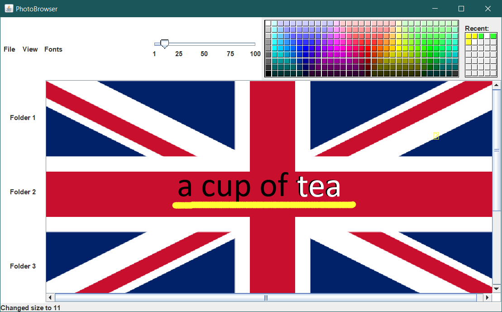

Java
Swing
GitHub: Annotations on image
Description of the project
Java implementation of a component that displays a photo and that lets the user add annotations (text or pen) to images.The user can move annotations and edit them (e.g. change color, size and font). The application automatically saves all the annotations and restores them when the same image is opened again.


Contact
Lets get in touch and talk about your next project.